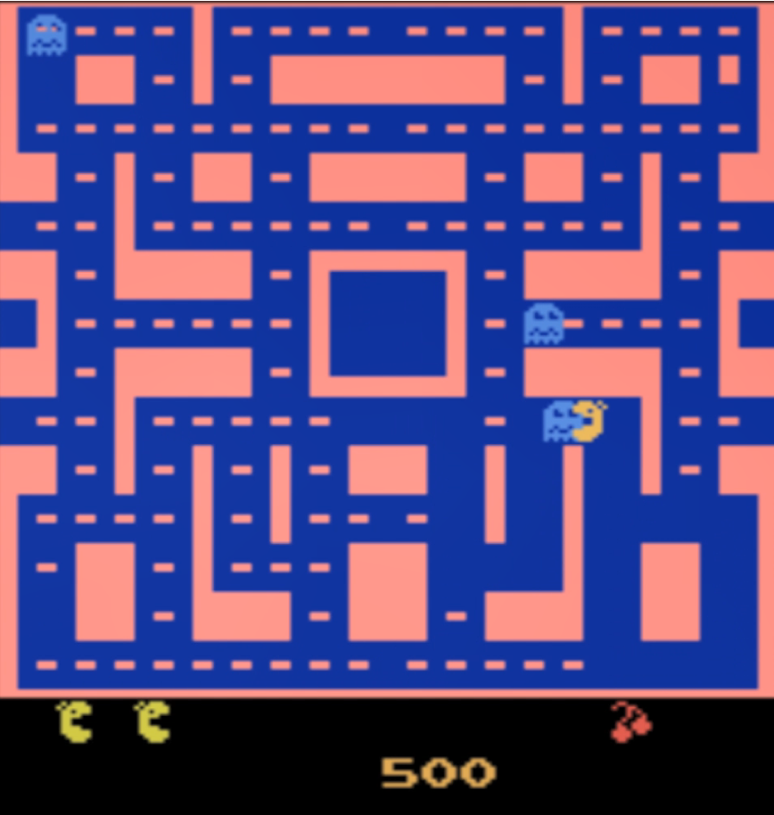

Playing Pacman using Deep Reinforcement Learning

Fig 1 - Screenshot of Trained Agent playing MsPacman
Summary
I developed an agent to play the game MsPacman using deep reinforcement learning. Specifically, I used the A3C Algorithm (Asynchronous Advantage Actor-Critic)
as it provides the following advantages:
- Combines both value and policy based learning using Actor-Critic model for more complex environments.
- Advantage function provides more robustness as it reduces variance in policy networks.
- Asynchronous nature means that multiple "worker" threads can update global model independently, leading to faster convergence.
Result
The result of the trained agent was averaged over multiple seeds and compared to the average score when playing with random selection.
|
Average score |
| Random Input |
350 |
| Trained Agent |
3600 |
These results demonstrate that the algorithm learned through gameplay, and yielded over 10x the average performance when compared to
random inputs.
Links